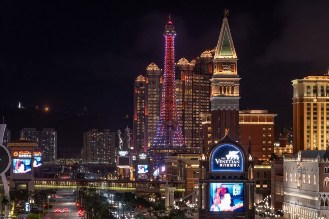
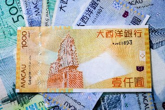
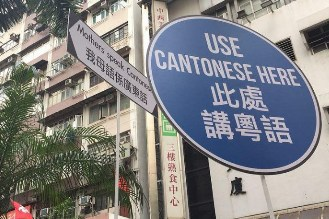

Macau
Um pouco sobre Macau
Geografia:Macau é uma Região Administrativa Especial da China, localizada na costa sul do país, no Delta do Rio das Pérolas e é formada por uma península e duas ilhas - Taipa e Coloane, situada a oeste de Hong Kong, a cerca de 60 km de distância.
É uma das regiões mais densamente povoadas do mundo, com uma população de cerca de 700.000 habitantes.
A paisagem de Macau é composta por uma mistura de arquitetura colonial portuguesa e edifícios modernos.
A cidade é conhecida por seus cassinos e resorts de luxo, além de suas ruas estreitas e becos sinuosos.
A economia de Macau é dominada pelo setor de jogos de azar e turismo, que contribui com uma grande parte do PIB da região. No entanto, a região também é um importante centro financeiro e de comércio, e possui um porto movimentado que liga a região ao resto do mundo.
História:
Macau tem uma história se inicia há mais de 450 anos, quando os portugueses estabeleceram um posto comercial na região no Século XVI.
Em 1557, Portugal recebeu permissão do Império Chinês para estabelecer um entreposto comercial em Macau, que se tornou um importante porto comercial no
comércio de seda e especiarias entre a China, o Japão, a Índia e a Europa.
Durante os Séculos XVII e XVIII, Macau prosperou como centro comercial, cultural e religioso, com influências chinesas e portuguesas se misturando para
criar uma cultura única.
A cidade se tornou um importante centro missionário católico, e muitas igrejas e instituições religiosas foram construídas na região.
A influência portuguesa pode ser vista em muitos dos edifícios coloniais, praças e ruas da cidade.
Em 1844, o Tratado de Nanjing foi assinado, concedendo Hong Kong aos britânicos e permitindo que outros países estrangeiros estabelecessem tratados com a
China. Como resultado, Macau tornou-se um entreposto comercial para muitas nações europeias, americanas e asiáticas.
Em 1999, Portugal transferiu a administração de Macau para a China, tornando-se uma Região Administrativa Especial da China, com uma economia próspera e
diversificada que continua a crescer hoje.
Macau também é famosa por seus cassinos e resorts de luxo, atraindo turistas de todo o mundo para desfrutar de suas atrações culturais e de entretenimento.
População e demografia:
De acordo com dados de 2021, a população de Macau era de cerca de 700.000 habitantes.
A maioria da população é composta por chineses étnicos (aproximadamente 94%), enquanto os outros 6% são de diversas origens, incluindo portugueses e
macaenses.
A língua oficial de Macau é o chinês, com o cantonês sendo o dialeto predominante. No entanto, o português também é uma língua oficial, embora seja falado
por uma parcela muito pequena da população.
Macau é uma sociedade multiétnica e multicultural, com influências chinesas e portuguesas sendo evidentes na cultura e na gastronomia local.
Há também uma grande comunidade de trabalhadores estrangeiros que vivem e trabalham na região.
Em termos de religião, a maioria da população é budista ou segue crenças chinesas tradicionais, embora haja uma significativa comunidade católica em Macau,
resultado da influência missionária portuguesa.
Economia:
A economia de Macau é dominada pelo setor de jogos de azar, responsável por boa parte do Produto Interno Bruto (PIB) da região.
Macau é conhecida como a "Las Vegas da Ásia" por suas numerosas casas de jogo e resorts de luxo.
Além do setor de jogos de azar, o turismo é uma importante fonte de receita para Macau.
A região atrai milhões de visitantes a cada ano, que vêm para desfrutar de sua arquitetura colonial portuguesa, gastronomia única e atrações turísticas como
as Ruínas de São Paulo, a Torre de Macau e o Templo de A-Ma, além é claro, dos cassinos.
Outras indústrias que contribuem para a economia de Macau incluem o comércio, o transporte marítimo e a indústria financeira. A região é um importante centro
financeiro e comercial, com um porto movimentado que liga a região ao resto do mundo.
Apesar de sua dependência do setor de jogos de azar, a economia de Macau tem se diversificado nos últimos anos, com investimentos em áreas como tecnologia,
educação e turismo cultural.
Cultura:
A cultura de Macau é uma mistura de influências chinesas e portuguesas.
A gastronomia de Macau é um dos aspectos mais conhecidos da cultura local, e também é uma fusão de influências chinesas e portuguesas. Alguns pratos famosos incluem
o arroz de pato, o porco assado, o minchi e a sopa de feijão-verde. Macau também é famosa por suas sobremesas, como o pastel de nata, o creme de ovo e o pudim de
leite.
Como quase tudo na cidade, a arquitetura também é uma mistura de influências chinesas e portuguesas, com muitos edifícios históricos que datam do período colonial
português, como a Fortaleza do Monte, o Largo do Senado e as Ruínas de São Paulo.
Além da gastronomia e da arquitetura, Macau também tem uma forte tradição artística e cultural, com festivais e celebrações ao longo do ano, incluindo o Festival
Internacional de Música de Macau, o Festival de Artes de Macau e a Festa do Buda.
A religião desempenha um papel importante na cultura de Macau, com muitos templos e santuários em toda a região, incluindo o Templo de A-Ma, o Templo de Kun Iam e
o Templo de Na Tcha.
Sistema político:
Macau é uma região administrativa especial da China, o que significa que possui um certo grau de autonomia em relação ao governo central chinês.
O sistema político de Macau é baseado no princípio "um país, dois sistemas", que permite que a região mantenha seu próprio sistema político, econômico e
social, enquanto continua a fazer parte da China.
Embora Macau tenha um alto grau de autonomia em relação ao governo central chinês, a região está sujeita às leis e regulamentos da China. O governo central
tem autoridade final sobre questões de segurança nacional e política externa em Macau.
O governo de Macau é liderado pelo Chefe do Executivo, eleito por um comitê eleitoral composto por membros locais e representantes do governo central chinês.
A Assembleia Legislativa de Macau é o órgão legislativo da região, composto por 33 membros eleitos, além de membros "ex-officio" e nomeados.
O governo de Macau é responsável por uma ampla gama de áreas, incluindo educação, saúde, segurança pública, transporte, turismo, cultura e desenvolvimento
econômico.
Religião:
Macau tem uma rica diversidade religiosa devido à sua história como uma colônia portuguesa e sua proximidade com a China.
A maioria da população local é seguidora do budismo. O cristianismo também tem uma presença significativa em Macau, especialmente o catolicismo, que foi
introduzido pelos colonizadores portugueses.
Há uma comunidade cristã protestante crescente em Macau, além de uma pequena comunidade muçulmana.
Além disso, o taoísmo e o confucionismo também são praticados em Macau, e existem templos taoístas e confucionistas na região.
Muitos moradores de Macau também praticam o culto aos antepassados e aos espíritos, que é uma parte importante da cultura chinesa tradicional.
Devido à sua diversidade religiosa, Macau celebra vários feriados religiosos, incluindo o Ano Novo Chinês, o Festival de Meio Outono e o Festival Qingming.
O Natal e a Páscoa também são feriados importantes para a comunidade católica em Macau.
Desenvolvimento Humano:
De acordo com o Programa das Nações Unidas para o Desenvolvimento (PNUD), o Índice de Desenvolvimento Humano (IDH) de Macau em 2021 foi de 0,947, o que é
classificado como "desenvolvimento humano muito alto".
Tal índice colocou Macau em 33º lugar entre todos os países e territórios do mundo.
A renda per capita de Macau é uma das mais altas do mundo, devido à sua economia próspera e indústria de jogos de azar. De acordo com dados de 2021 do Fundo
Monetário Internacional (FMI), o Produto Interno Bruto (PIB) per capita de Macau ficou em US$ 99.760, o que coloca a região em 3° lugar entre os países e
territórios com a maior renda per capita do mundo, atrás apenas do Catar e de Luxemburgo.
No entanto, é importante notar que a distribuição de renda em Macau não é uniforme, e há desigualdades econômicas entre diferentes grupos da população.
A Vegas da Ásia
Porque ir à Macau? O que te espera por lá?
Macau é um destino turístico incrível por várias razões, a começar por sua cultura única que combina influências chinesas e portuguesas.Para brasileiros chega a ser estranho encontrar placas, sinalizações, panfletos e nomes de lugares em português em uma cidade da Ásia.
A herança portuguesa não se restringiu ao idioma português, mas também na bela arquitetura da cidade, que em certas áreas demonstra claramente as suas influências portuguesas, com calçadas com pedras portuguesas e decorações com azulejos no melhor estilo português.
O contraste dessa arquitetura clássica portuguesa com os berrantes neons dos cassinos é algo que vale a pena ver de perto.
Há vários locais interessantes para serem visitados, como as Ruínas de São Paulo, a Catedral de São Lourenço, e a Fortaleza do Monte. E sim, lá essas atrações tem esses nomes em português mesmo!
Para os que querem tentar a sorte, Macau é frequentemente chamada de "Las Vegas da Ásia" devido à sua indústria de jogos e entretenimento. Por ser o único local na China onde o jogo de cassino é legalizado, todo o mercado chinês do ramo está centralizado na cidade, o que faz aparecer um novo cassino a cada esquina.
A culinária de Macau também merece destaque, com sua fusão de sabores chineses e portugueses.
Além de suas atrações urbanas, Macau oferece também belas paisagens naturais e ilhas encantadoras, como a Ilha de Coloane com suas praias tranquilas e trilhas cênicas, e a Ilha de Taipa, com suas ruas pitorescas e restaurantes deliciosos.
Outro bom motivo de visitar à cidade é que ela é facilmente acessada desde outra cidade que merece e muito ser visitada: a fantástica Hong Kong! Então, é quase como uma promoção "viagem para 1, conheça 2", já que você pode ir de uma para outra facilmente com um barco, e pode fazer isso como um passeio de 1 dia, indo de manhã e voltando à noite.
O que é necessário para um brasileiro entrar em Macau?
Brasileiros precisam de visto para turismo, mas o processo de obtenção pode ser realizado na chegada (visa on arrival). Para solicitar o visto, é necessário apresentar um passaporte válido, uma foto recente, uma passagem aérea de ida e volta ou comprovante de ida para um próximo destino, além de, em alguns casos, um comprovante de hospedagem em Macau ou um comprovante de recursos financeiros suficientes para cobrir as despesas da viagem. Quando fui de Hong Kong à Macau através de balsa, não foi solicitado reserva de hospedagem ou comprovante de recursos financeiros (talvez porque eles saibam que é comum turistas de Hong Kong irem à Macau como uma day trip e voltarem no mesmo dia).Com esse visto obtido na chegada, brasileiros podem permanecer na cidade por até 30 dias.
Mas é importante ressaltar que é necessária a apresentação do certificado internacional de vacinação contra febre amarela.
Como as regras e exigências podem mudar, recomenda-se que os viajantes verifiquem as exigências atuais antes de viajar para Macau.
Como chegar à Macau?
E não tenho esse dado ao certo, mas acredito que a maioria dos visitantes de Macau, pelo menos os não chineses, acessam a cidade através de Hong Kong. Então, para chegar a Macau, o caminho mais provável é chegar primeiro em Hong Kong e de lá seguir para Macau.Mas você pode optar por voar diretamente para o Aeroporto Internacional de Macau (MFM), que tem voos de/para várias cidades importantes da Ásia, como Hong Kong, Bangkok, Cingapura, Kuala Lumpur, Seul, Tóquio, Xangai, entre outras. Do aeroporto até o centro da cidade você pode seguir com um táxi, ônibus ou com o serviço de transporte gratuito oferecido por muitos cassinos e hotéis.
Partindo de Hong Kong você pode optar por via terrestre ou marítima.
Você pode pegar um barco no Terminal de ferry Hong Kong/Macau, localizado no bairro de Tsim Sha Tsui.
Os ferries partem regularmente durante todo o dia, e a viagem dura cerca de 1 hora.
Além deste barco que conecta Hong Kong e Macau, há também rotas que ligam Macau à outras regiões vizinhas, como a cidade de Zhuhai, na China continental, e algumas ilhas menores.
Se estiver na China continental, você pode chegar a Macau por meio de ônibus ou trem.
Existem serviços de ônibus que conectam várias cidades chinesas a Macau, facilitando a viagem de lugares como Guangzhou, Shenzhen e Zhuhai.
Além disso, existe uma estação ferroviária em Zhuhai que permite a viagem de trem para Macau.
O clima
O clima de Macau é subtropical úmido, com verões quentes e úmidos e invernos suaves e secos.A temperatura média anual é de cerca de 23°C, com uma alta média de 29°C em julho e agosto e uma baixa média de 13°C em janeiro.
O verão vai de junho a agosto, é quente e úmido, com temperaturas frequentemente acima de 30°C e alta umidade. As chuvas são comuns durante esta época do ano, com possibilidade de tufões e tempestades tropicais.
O inverno vai de dezembro a fevereiro, é suave e seco, com temperaturas geralmente variando entre 12°C e 20°C. O clima é agradável durante esta época do ano, tornando-a uma das épocas mais populares para visitar Macau.
A primavera e o outono são estações de transição em Macau, com temperaturas amenas e pouca chuva. Estas estações podem ser agradáveis para visitar, especialmente para aqueles que preferem temperaturas mais moderadas.
Os visitantes devem estar preparados para as chuvas e tufões que ocorrem durante a estação de verão e trazer roupas adequadas para as condições climáticas.
A moeda
A moeda oficial de Macau é a pataca de Macau (MOP), que é emitida pelo Banco da China em Macau.A pataca de Macau é vinculada ao dólar de Hong Kong em uma taxa de câmbio fixa, com um valor de 1 HKD = 1,03 MOP.
Além da pataca de Macau, o dólar de Hong Kong e o renminbi chinês também são amplamente aceitos em Macau, especialmente em estabelecimentos comerciais e turísticos.
Muitos bancos e casas de câmbio em Macau oferecem serviços de câmbio para as principais moedas internacionais, como o dólar americano, o euro e o iene japonês.
É importante notar que, apesar de ser uma região administrativa especial da China, Macau tem um sistema monetário e bancário independente do sistema chinês.

Feriados
Em Macau há vários feriados nacionais, regionais e outros eventos comemorativos ao longo do ano.Alguns feriados têm data fixa e outros têm datas variáveis, dependendo do calendário lunar.
01/01 - Ano Novo
Janeiro/Fevereiro - Ano Novo Chinês: também conhecido como Festival da Primavera, é o feriado mais importante em Macau e é comemorado por vários dias. As datas variam de acordo com o calendário lunar, geralmente entre janeiro e fevereiro. O 2° Dia do Ano Novo Chinês, também conhecido como Cheung Chau Bun Festival, é um feriado comemorado com festividades em algumas áreas de Macau.
Abril: Ching Ming Festival: também conhecido como Festival dos Túmulos, é um feriado em que as famílias visitam e prestam homenagem aos túmulos de seus ancestrais. A data exata varia conforme o calendário lunar.
1/5 - Dia do Trabalhador: feriado internacional que celebra o Dia do Trabalho.
1/5 - Dia da Recordação de Maio: comemora o dia em que Macau se libertou do domínio português, em 1974.
Maio: Dia de Buda: feriado budista celebrado no 8° dia do 4° mês lunar, normalmente em Maio.
Junho: Festival Tuen Ng: também conhecido como o Festival do Barco-Dragão, é um feriado que celebra a memória do poeta Qu Yuan. Geralmente ocorre em junho.
20/12 - Dia da Restauração de Macau a China: celebra o estabelecimento da Região Administrativa Especial de Macau em 1999 e a retomada do controle de Macau pela China.
25/12 - Natal: feriado cristão que celebra o nascimento de Jesus Cristo.
Tomadas e eletricidade
A corrente elétrica é de 220V, e as tomadas em Macau são de 2 tipos: as de 3 pinos roliços e as de 3 pinos chatos. A grande maioria é de tomadas com entradas para pinhos chatos, já que não se vendem mais aparelhos com pinos roliços em Macau e as tomadas com padrão vem sendo substituídas.


Falando cantonês
O idioma oficial de Macau é o chinês (cantonês), falado pela maioria da população.O português também é considerado um idioma oficial de Macau, mas é falado por uma pequena minoria e é mais comum entre os residentes mais velhos.
O inglês é amplamente utilizado em negócios, turismo e como língua de instrução em algumas escolas.
Quanto ao alfabeto, o chinês em Macau é escrito com caracteres chineses (também conhecidos como hanzi), que são ideogramas que representam palavras ou conceitos. O português é escrito com o alfabeto latino, que conhecemos bem.
O chinês escrito em Macau é uma variante do cantonês, que usa os mesmos caracteres que o chinês mandarim, mas é pronunciado de forma diferente.

Macau é segura?
Macau é uma região segura para turistas e residentes. A taxa de criminalidade em Macau é baixa, e a presença policial é forte em áreas turísticas e comerciais.Os crimes mais comuns em Macau são pequenos furtos e golpes, especialmente em áreas com grande concentração de turistas. No entanto, esses casos são geralmente não violentos e podem ser evitados tomando precauções básicas, como manter objetos de valor seguros e ficar atento a situações suspeitas.
Além disso, as medidas de segurança em Macau são rigorosas em áreas como cassinos e hotéis, com a presença de câmeras de segurança e seguranças privados.
As autoridades de Macau também estão sempre trabalhando para garantir a segurança dos turistas, implementando programas de segurança pública e melhorando a infraestrutura de segurança da região.
Mas como em qualquer lugar, é importante tomar precauções básicas de segurança e ficar atento a situações suspeitas.
Tourist traps e scams
Macau é um destino turístico popular, então é inevitável que haja golpistas que tenham turistas como alvo.Embora a maioria das experiências em Macau seja genuína e autêntica, é sempre útil estar ciente de possíveis golpes para estar precavido e evitar problemas. Algumas dos golpes em que turistas podem cair em Macau são:
* Jogos de azar fraudulentos: evite participar de jogos de azar em ruas ou áreas públicas fora dos cassinos licenciados. Alguns golpistas podem tentar atrair turistas para jogos manipulados, onde é quase impossível ganhar.
* Taxas excessivas de táxi: alguns taxistas podem tentar cobrar taxas exorbitantes de turistas desavisados. Sempre peça para ligar o taxímetro ou acorde um preço justo antes de embarcar. Infelizmente esse é um problema comum em cidades turísticas ao redor do mundo.
* Vendedores ambulantes agressivos: em algumas áreas turísticas movimentadas, você pode encontrar vendedores ambulantes agressivos que tentam empurrar produtos a preços inflacionados. Lembre-se de que você pode negociar preços em mercados de rua, mas fique atento a possíveis tentativas de golpe.
* Troco incorreto: alguns comerciantes desonestos podem tentar dar troco errado ou menos dinheiro do que deveriam. Sempre conte seu dinheiro cuidadosamente e, se possível, use notas menores para evitar problemas.
* Esquemas de compra de arte: algumas galerias de arte podem tentar vender itens caros, alegando que são investimentos valiosos. Faça sua pesquisa antes de comprar arte cara e evite fazer compras impulsivas.
* Golpes de cartão de crédito: cuidado ao usar seu cartão de crédito em locais turísticos movimentados. Alguns lugares podem clonar seu cartão, por isso, prefira pagar em dinheiro ou usar cartões em locais mais confiáveis.
* Massagens ou serviços excessivamente caros: alguns spas ou casas de massagem podem cobrar preços exorbitantes de turistas. Sempre verifique os preços antecipadamente e busque recomendações de locais confiáveis.
* Falsos guias turísticos: cuidado com pessoas que se oferecem para ser guias turísticos não oficiais. Eles podem não ser licenciados e podem cobrar caro por serviços de qualidade questionável.
* Atrações "gratuitas" que exigem pagamento: alguns lugares podem se anunciar como "atrações gratuitas" para atrair turistas, mas acabam cobrando para entrar ou ver certas áreas. Verifique os detalhes com antecedência.
Para evitar cair em golpes, é essencial pesquisar com antecedência e estar atento durante a viagem. Seja cético em relação a ofertas muito boas para serem verdadeiras e confie em seus instintos.
A Cozinha de Macau
A culinária de Macau é uma atração turística por si só, e existem muitos restaurantes na região que oferecem uma ampla variedade de pratos para experimentar. É uma mistura única de influências chinesas e portuguesas, com toques de outras cozinhas asiáticas. Alguns dos principais pratos da culinária de Macau incluem:Bacalhau: prato muito popular em Macau, trazido pelos portugueses, geralmente preparado com batatas, cebolas e azeitonas.
Minchi: prato de carne moída geralmente servido com arroz e um ovo frito por cima.
Arroz de marisco: arroz cozido com frutos do mar, incluindo camarões, caranguejos, mexilhões e lulas.
Porco agridoce: fatias de porco frito em uma mistura de açúcar, vinagre e molho de soja.
Galinha à africana: prato de frango cozido em uma mistura de especiarias africanas, incluindo pimentão, cominho e coentro.
Pasteis de nata: famoso doce português, uma espécie de torta com creme de leite e açúcar queimado na superfície.
Almond biscuits: biscoitos de amêndoa crocantes e levemente doces.
Dim sum: um estilo de cozinha chinesa que consiste em pequenos pratos, incluindo bolinhos de massa recheados com carne ou frutos do mar, bolinhos de vegetais e sopas.
Macau na cultura Pop
Embora não muito conhecida na cultura pop mundial, Macau, é às vezes mencionada, especialmente em filmes que retratam o mundo dos cassinos e dos jogos de azar. A lista de filmes exclusivamente sobre Macau é pequena, mas a cidade tem sido usada como cenário em várias produções de cinema e televisão, sobretudo filmes de Hong Kong e da China Continental.Filmes:
007 - Skyfall (2012): o filme tem uma cena em um cassino fictício em Macau.
O Grande Mestre (2013): esta cinebiografia do mestre de artes marciais Ip Man tem uma cena importante ambientada em Macau.
Casino Raiders (1989): filme de ação e crime de Hong Kong, estrelado por Andy Lau e Alan Tam. Se passa em Macau e apresenta a cena de jogos da cidade.
Now You See Love, Now You Don't (1992): também conhecido como Shanghai, Shanghai, este filme de romance e drama é ambientado em Xangai e Macau nos anos 1940.
Fulltime Killer (2001): thriller de ação de Hong Kong dirigido por Johnnie To e Wai Ka-Fai. Embora a maior parte do filme se passe em Hong Kong, Macau também é apresentada em algumas cenas.
Viva Erotica (1996): comédia dramática de Hong Kong que segue um diretor de cinema que enfrenta desafios ao filmar um filme erótico em Macau. Dirigido por Derek Yee e estrelado por Leslie Cheung e Karen Mok.
Love in the City (1955): um dos primeiros filmes de Macau, uma coletânea de histórias curtas que retratam a vida cotidiana dos habitantes de Macau. Dirigido por Li Zhi.
Isabella (2006): drama sobre um detetive e sua filha, e embora grande parte do filme se passe em Hong Kong, também mostra cenas pitorescas de Macau. É dirigido por Pang Ho-cheung.
Música:
A música Macao (1997), do músico americano G.E. Stinson, é uma homenagem à cidade e sua cultura.
Como Macau se restringe há uma cidade de 700.000 habitantes, não há muitas bandas e uma cena muito grande na cidade.
Moda:
O traje tradicional das danças folclóricas de Macau, o Traje de Leque, é frequentemente usado em apresentações de dança e em desfiles de moda.
Esportes:
Macau tem um grande número de fãs de corridas de carros e motocicletas, e a cidade é um destino popular para as principais corridas de rua do mundo, incluindo
o Grande Prêmio de Macau.
As atrações de Macau
É conhecido como o "Las Vegas da Ásia" devido à sua concentração de resorts integrados, cassinos, hotéis de luxo e entretenimento.
O desenvolvimento do Cotai Strip começou na década de 2000, quando Macau estava buscando expandir sua indústria de cassinos e turismo. A área de Cotai foi escolhida para ser a nova zona de entretenimento e cassinos, devido à sua localização estratégica entre as 2 principais ilhas de Macau.
O Cotai Strip abriga alguns dos maiores resorts integrados do mundo, incluindo o Venetian Macau, o City of Dreams, o Galaxy Macau, o Sands Cotai Central, o Studio City e muitos outros.
Cada um desses resorts oferece uma ampla gama de opções de entretenimento, incluindo cassinos, shows, restaurantes de classe mundial, shoppings, spas e instalações recreativas.
Uma das principais características do Cotai Strip é a sua arquitetura impressionante e extravagante.
Muitos dos resorts têm temas distintos e recriam locais famosos em todo o mundo, como Veneza, Roma, Paris e Nova York, proporcionando aos visitantes uma experiência única e diversificada.
Horário: os resorts e cassinos no Cotai Strip operam 24 horas por dia, 7 dias por semana. Os horários de funcionamento de lojas, restaurantes e atrações dentro dos resorts podem variar. Voltar à lista
Possui canais, gôndolas e uma grande variedade de lojas e restaurantes.
Um dos maiores resorts e cassinos do mundo, conhecido por sua arquitetura luxuosa e temática veneziana, que reproduz a atmosfera e a aparência da cidade de Veneza, na Itália.
Foi inaugurado em Agosto de 2007 como parte do complexo de resorts integrados chamado Cotai Strip.
O resort é uma expansão do grupo Sands China Limited e faz parte do distrito de Cotai, uma área de aterro entre as ilhas de Taipa e Coloane, em Macau.
Fazem parte da impressionante recriação alguns dos marcos mais icônicos de Veneza, como o Grande Canal e a Praça de São Marcos. O resort abriga 3000 suítes luxuosas, uma das maiores áreas de jogo do mundo, uma extensa variedade de lojas de grife, restaurantes requintados, teatros, piscinas e outras instalações de entretenimento.
O The Grand Canal Shoppes é um centro comercial que simula os canais de Veneza, onde os visitantes podem fazer compras enquanto passeiam por gôndolas conduzidas por gondoleiros vestidos de maneira típica.
Se você quiser conhecer parte do luxo de Macau sem ter que gastar uma fortuna, esta é uma boa opção.
Horário: aberto 24 horas por dia, 7 dias por semana. Os horários de funcionamento de lojas, restaurantes e instalações podem variar.
Entrada: o acesso ao complexo do Venetian Macau é gratuito. No entanto, as atividades, como jogos de azar, atrações, shows e restaurantes, têm custos adicionais. Voltar à lista
É conhecido por sua arquitetura distintiva em forma de lótus, além de oferecer uma variedade de opções de entretenimento, rastaurantes de alto nível e jogos de azar incluindo máquinas caça-níqueis, jogos de mesa como blackjack, roleta, bacará, poker e muito mais. Tudo isso em um ambiente luxuoso, com uma variedade de opções.
O cassino é parte do complexo do Grand Lisboa Hotel, inaugurado em 2007.
No entanto, a história da marca Lisboa se inicia quando o primeiro cassino Lisboa foi inaugurado na cidade, em 1970, tornando-se um marco importante na indústria de jogos de azar na região.
Horário: 24 horas por dia, 7 dias por semana.
Entrada: gratuita.
Site: www.grandlisboahotels.com Voltar à lista
Possui uma extensa área de jogos com uma variedade de opções, incluindo máquinas caça-níqueis, jogos de mesa como blackjack, roleta, bacará, poker e outros. Além do cassino, o complexo também abriga restaurantes, bares, lounges e um espaço de entretenimento com shows e espetáculos ao vivo.
Ao longo dos anos, passou por várias renovações e expansões para manter-se relevante no cenário de cassinos em constante evolução na região.
É considerado um marco importante na indústria de jogos de azar em Macau.
Horário: 24 horas por dia, 7 dias por semana.
Entrada: o acesso ao Cassino Lisboa é gratuito.
Site: https://hotelisboa.com Voltar à lista
Foi inaugurado em 1º de junho de 2009 e é de propriedade e operado pela Melco Resorts & Entertainment Limited.
O complexo foi desenvolvido como parte do plano de expansão da região de Cotai, em Macau, que se tornou um importante centro de entretenimento e turismo.
É um destino de entretenimento de classe mundial com hotéis de luxuosos, como o Crown Towers, o Hard Rock Hotel e o Grand Hyatt Macau.
O complexo também abriga o cassino Casino City of Dreams, que oferece uma variedade de jogos de azar, como máquinas caça-níqueis, mesas de pôquer, jogos de mesa e muito mais.
Uma das principais atrações do City of Dreams é o House of Dancing Water, um espetáculo acrobático aquático apresentado em um teatro especialmente projetado com piscinas e efeitos especiais deslumbrantes.
Além disso, o City of Dreams oferece uma seleção variada de restaurantes que atendem a diversos paladares, bem como lojas de luxo.
Horário: 24 horas por dia, 7 dias por semana. No entanto, os horários de funcionamento das diferentes atrações, restaurantes e lojas podem variar.
Entrada: a entrada no complexo do City of Dreams é gratuita. No entanto, algumas atrações, shows, restaurantes e atividades podem ter custos adicionais.
Site: www.cityofdreamsmacau.com Voltar à lista
A igreja foi projetada por um arquiteto italiano e tornou-se um dos mais impressionantes exemplares da arquitetura religiosa ocidental na Ásia.
Em 1835, um incêndio devastador destruiu a igreja, restando apenas a fachada e as escadarias de granito.
As Ruínas de São Paulo são um marco histórico e culturalmente significativo, atraindo milhares de turistas de todo o mundo para conhecer a história e a beleza arquitetônica dessa antiga igreja.
É uma parada imperdível para quem visita Macau e deseja explorar sua rica herança cultural e histórica.
É um Patrimônio Mundial da UNESCO e uma das principais atrações turísticas da cidade.
Horário: por ser uma atração ao ar livre e sem área cercada, fica aberta 24hs por dia.
Entrada: gratuita.
Site: https://ruinsofstpaulsmacau.business.site/ Voltar à lista
Nos tempos coloniais, era a praça central do assentamento português.
A presença do Senado de Macau (ou Câmara Municipal) na praça deu origem ao seu nome.
A área servia como o centro político e social da cidade e era um local importante para atividades comerciais e governamentais.
Mesmo com o passar dos séculos, o Largo do Senado continuou sendo uma área movimentada e hoje é uma das praças mais emblemáticas e históricas da cidade, além de ser uma de suas principais atrações turísticas.
É um ótimo lugar para passear, tirar fotos e absorver a atmosfera única de Macau, além de ver as várias construções históricas que cercam a praça.
Horário: como é uma praça pública ao ar livre está aberta 24 horas por dia, 7 dias por semana. Voltar à lista
A antiga fortaleza histórica começou a ser construída em 1617 e foi concluída em 1626, durante a dinastia Ming. Foi construída pelos portugueses para proteger Macau dos ataques de piratas e outras ameaças.
Ao longo dos séculos, a fortaleza serviu como uma importante estrutura defensiva para a cidade, com canhões e muros imponentes.
Com o tempo, sua necessidade defensiva diminuiu, e a fortaleza foi convertida em uma base militar e, posteriormente, em quartéis e depósitos.
A fortaleza é construída em granito e está localizada no ponto mais alto da Península de Macau, o que lhe proporciona uma posição estratégica para monitorar a cidade e a entrada do Porto Interior.
É uma atração turística popular em Macau, oferecendo aos visitantes uma oportunidade única de mergulhar na história e explorar as estruturas militares do passado. Além disso, por ficar no alto da Colina da Guia oferece vistas panorâmicas deslumbrantes da cidade.
Horário: diariamente das 7:30 às 19:00.
Entrada: gratuita. Voltar à lista
Foi inaugurado em 1998 e está situado em um edifício histórico, conhecido como Fortaleza do Monte, que foi construído em meados do Século XVII pelos portugueses como uma estrutura defensiva.
O museu foi criado com o objetivo de preservar e promover a história e a cultura únicas de Macau, uma vez que a região tem uma rica história de influências chinesas e portuguesas, bem como de outras culturas asiáticas e ocidentais.
O Museu de Macau possui uma série de exposições permanentes e temporárias que cobrem diversos aspectos da história e cultura de Macau. As exposições incluem artefatos históricos, documentos, fotografias, obras de arte, objetos culturais e informações interativas, proporcionando aos visitantes uma visão abrangente sobre o passado e o presente da região.
O museu também possui uma grande variedade de temas, incluindo a história do comércio, a influência das comunidades chinesas e portuguesas, as tradições culturais, a arquitetura, a religião, a gastronomia e muito mais.
Horário: de terça-feira a domingo, das 7:00 às 19:00. Fechado às segundas-feiras, exceto feriados públicos.
Entrada: MOP 15 para adultos, MOP 8 para estudantes e gratuita para menores de 12 anos, maiores de 65 anos e residentes em Macau (preços de 7/2023). Entrada gratuita às Terças e no dia 15 de cada mês.
Site: www.macaumuseum.gov.mo Voltar à lista
É uma das principais atrações turísticas da região e é amplamente conhecida por suas atividades emocionantes.
Sua construção começou em 1998 e ela foi concluída em 2001.
Com uma altura de 338 metros, a torre foi projetada para oferecer vistas deslumbrantes em 360° de Macau e das áreas circundantes, incluindo a Península de Macau e a Ilha de Taipa.
A Torre de Macau possui um design arquitetônico moderno e oferece várias opções de entretenimento e lazer aos visitantes. Ela abriga um mirante de observação no topo, onde os visitantes podem desfrutar de vistas panorâmicas.
Além do mirante, a torre oferece atrações emocionantes, como seu bungee jump que é uma das maiores quedas livres comerciais do mundo. Os visitantes também podem desfrutar de atividades como o skywalk, onde podem caminhar ao redor do lado de fora da torre, presos por cabos de segurança.
Horário: das 10:00 às 19:00 durante dias de semana e das 10:00 às 20:00 nos finais de semana.
Entrada para o mirante: MOP 195 para adultos, MOP 115 para maiores de 65 anos e crianças de 3 à 11 anos. As atividades radicais, como o bungee jump e o skywalk, têm preços adicionais. O bungee jump custa MOP 3.088 para 1 pessoa ou MOP 5.388 para 2 pessoas. Para o sky jump o preço é MOP 2.188 para 1 pessoa e MOP 3.288 para 2 pessoas. O skywalk custa MOP 788 para o normal, e MOP 388 para o Express. O Tower Climb custa MOP 2.488 (preços de 7/2023). Site: www.macautower.com.mo
Site para comprar ticket das atividades radicais: www.skyparkglobal.com/cn-en/macau Voltar à lista
Os visitantes podem encontrar uma variedade de iguarias, como biscoitos de amêndoa, bolos de carne, bolos de folhas de chá, pastéis de nata, doces de leitão, entre outros. Além disso, a rua também possui algumas lojas de souvenirs onde os visitantes podem comprar lembranças típicas de Macau.
É uma das ruas mais antigas de Macau, originalmente uma rua residencial e comercial onde muitos moradores locais viviam e administravam pequenos negócios.
Com o tempo, a rua se tornou mais turística, e hoje em dia é uma atração popular para os visitantes que desejam provar a rica variedade de iguarias que Macau tem a oferecer.
É um local animado e colorido, onde se pode mergulhar na cultura e no sabor de Macau.
Horário: o horário de funcionamento das lojas e estabelecimentos pode variar. Geralmente, a rua fica mais movimentada durante a tarde e a noite. Voltar à lista
Foi projetado e desenvolvido pelo empresário de Macau, David Chow, que pretendia criar uma atração turística única que oferecesse uma variedade de experiências de entretenimento, compras e gastronomia para os visitantes.
O complexo é uma mistura eclética de diferentes estilos arquitetônicos, recriando uma vila marítima com temáticas de diferentes partes do mundo, como o estilo arquitetônico europeu, asiático, mediterrâneo e árabe.
O complexo abriga várias atrações, como restaurantes, lojas, cassino, parque temático com montanha-russa, show de água, réplica de vulcão, teatro, museu e muito mais.
Entrada: gratuita. No entanto, algumas atrações e atividades dentro do Fisherman's Wharf podem ter custos associados, como taxas de entrada, ingressos para shows, montanha-russa, entre outros.
Site: www.fishermanswharf.com.mo Voltar à lista
Foi inaugurado em dezembro de 2009, com o objetivo de oferecer uma experiência educacional e divertida para os visitantes, incentivando o interesse e a curiosidade pela ciência, tecnologia e inovação.
Possui instalações modernas e interativas, com exposições e atividades práticas que exploram várias áreas da ciência, como física, química, biologia, astronomia, tecnologia e meio ambiente.
Os visitantes têm a oportunidade de participar de experimentos, demonstrações e experiências práticas que tornam o aprendizado da ciência uma experiência envolvente e estimulante.
Além das exposições interativas, o centro também abriga um planetário com projeções em 3D, onde os visitantes podem explorar o universo e aprender sobre os mistérios do espaço.
Horário: aberto de terça-feira à domingo, das 10:00 às 18:00. Fechado às segundas-feiras, exceto feriados públicos.
Entrada: a entrada pode variar dependendo da idade do visitante, do tipo de exposições e atividades que desejam participar e se desejam adicionar o acesso ao planetário. Há descontos para crianças, estudantes e grupos.
Site: www.msc.org.mo Voltar à lista
É uma oportunidade única para os visitantes conhecerem esses adoráveis animais e aprenderem mais sobre os esforços de conservação em seu habitat natural.
Inaugurado em 2010 como parte dos esforços de conservação e educação ambiental em Macau, o centro conseguiu, através de uma parceria com a China, o envio de 2 pandas gigantes como parte de um programa de preservação.
Os pandas vivem em um ambiente que simula seu habitat natural, com vegetação exuberante e espaços para brincar e descansar.
Além dos pandas, o local também oferece exposições e informações educacionais sobre a espécie, bem como sobre a importância da conservação dos pandas gigantes e de seus habitats naturais.
Uma atração emocionante e educativa para toda a família.
Entrada: gratuita.
Site: https://nature.iam.gov.mo/c/countrypark/... Voltar à lista
Também conhecida como Casa do Mandarim das Três Famílias, esta mansão histórica é um importante exemplo da arquitetura tradicional chinesa e uma atração turística que preserva a rica herança cultural da região.
Foi construída no Século XIX e pertenceu a 3 famílias de mandarins (altos funcionários do governo) chineses ao longo de sua história.
A mansão é uma combinação de estilos arquitetônicos chineses e ocidentais, refletindo a fusão cultural única que caracteriza Macau, com destaque para os detalhes esculpidos em madeira, as paredes de azulejos pintados à mão e ao pátio central que proporciona uma atmosfera tranquila e serena.
A mansão possui vários quartos e salas, cada um com decoração e mobiliário que recriam a atmosfera da época em que as famílias de mandarins viveram ali.
O local é um exemplo impressionante da arquitetura residencial de elite da China do Século XIX e oferece aos visitantes uma visão da vida das famílias nobres da época.
Horários: diariamente das 10:00 às 18:00, exceto às Quartas.
Entrada: a entrada pode variar dependendo da idade do visitante e se são estudantes ou adultos. Há descontos disponíveis para crianças e estudantes. É recomendado verificar o site oficial ou entrar em contato com o local para obter informações atualizadas sobre os preços de entrada.
Site: www.wh.mo/mandarinhouse/pt/ Voltar à lista
É dedicado à deusa A-Ma, reverenciada como a padroeira dos pescadores e navegadores.
Foi construído em 1488, durante a dinastia Ming.
Segundo a lenda, o templo foi construído em homenagem a A-Ma, uma humilde pescadora que salvou uma embarcação portuguesa de um naufrágio. Os marinheiros portugueses, impressionados com sua devoção e habilidade, deram-lhe o título de A-Ma, que significa Mãe em chinês.
A construção, composto por várias estruturas interconectadas, é um exemplo notável da arquitetura chinesa tradicional. O complexo do templo possui 6 pavilhões principais, cada um dedicado a diferentes divindades.
Os visitantes podem encontrar estátuas e altares dedicados a A-Ma, além de outras divindades taoístas, budistas e confucionistas.
O templo é cercado por uma bela paisagem natural, com rochas, árvores e áreas de jardins que criam uma atmosfera tranquila e propícia à contemplação.
Horário: diariamente das 7:00 às 18:00.
Entrada: gratuita, mas os visitantes podem fazer doações voluntárias para a manutenção do templo.
Site: https://www.wh.mo/cn/site/detail/1 Voltar à lista
Foi inaugurado em 1936 e, ao longo dos anos tornou-se um importante ponto de encontro para moradores locais em busca de alimentos frescos, vegetais, frutas, peixes e carnes.
Os visitantes podem encontrar uma grande seleção de frutas, legumes, frutos do mar, carnes e outros produtos locais. Além dos alimentos frescos, o mercado também abriga algumas lojas de conveniência, lanchonetes e barracas de comida onde os visitantes podem saborear pratos locais.
Uma das características distintivas do Mercado Vermelho é sua arquitetura colonial, com uma fachada vermelha e um telhado verde tradicional.
Horário: aberto diariamente, geralmente das 7:00 às 21:00, mas pode variar de acordo com as diferentes barracas e lojas.
Entrada: gratuita. Voltar à lista
Desde sua inauguração, tem se dedicado a preservar e exibir obras de arte que representam as diversas culturas e estilos artísticos que moldaram a identidade de Macau ao longo dos séculos.
O museu abriga uma coleção diversificada de arte, incluindo pinturas, esculturas, cerâmicas, artefatos históricos e outras formas de expressão artística.
O Museu de Arte de Macau também é conhecido por seus programas educacionais e atividades interativas, que visam envolver o público e incentivar o interesse pela arte e cultura.
Entrada: a entrada pode variar, dependendo da idade do visitante e se são estudantes ou adultos. Há descontos disponíveis para crianças, estudantes e idosos.
Site: www.mam.gov.mo/welcome Voltar à lista